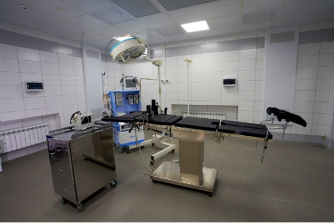
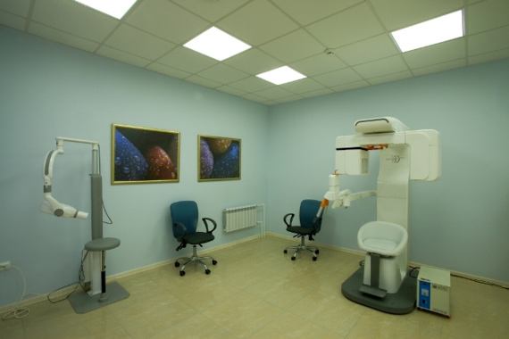

пластическая хирургия
пластическая хирургия
о нас
Известно, что для успешного проведения большинства видов лечения, а также имплантации и в хирургических случаях необходима качественная, высокоточная диагностика. Именно поэтому клиники уделяет максимальное внимание оборудованию соответствующего класса. В настоящее время «АГ ФАБЕР ДЕНТАПЛАНТ» оснащен собственным кабинетом компьютерной томографии. Это единственный томограф такого уровня в Уфе. Компьютерная томография необходима при планировании стоматологических операций, имплантации, остеопластики, синуслифта, латерализации нижнемандибулярного нерва, а также для исследований и диагностики зубных рядов и челюстно-лицевой области, для реконструктивной стоматологии, имплантологии, пародонтологии, эндодонтии, ортодонтии, восстановительной хирургии и протезирования зубов. Клиника оснащена современным компьютерным томографом - Rayscan Symphony B, позволяющим получить неограниченное количество анатомических срезов для последующего использования.Кроме того, «АГ ФАБЕР ДЕНТАПЛАНТ» - единственная частная клиника оснащенная собственным многофункциональным операционным блоком, соответствующим мировым стандартам и позволяющим проводить уникальные многочасовые операции под общим безопасным наркозом.
Операционный зал оснащен современным оборудованием, системой ламинарной очистки воздуха седьмого уровня чистоты. Это практически исключает возникновение внутрибольничных инфекций. Уже сегодня здесь проводятся такие операции как - удаление зубов, лечение кист и гранулем, резекция корня, вестибулопластика, пластика мягких тканей, имплантация зубов, остеопластика (регенеративная терапия, восстанавливающая дефекты костной ткани) и др. Реконструктивно-пластические операции такие как - лечение переломов костей лицевого скелета, хирургическое лечение деформации прикуса, костно-пластические операции при нарушениях пропорции лица, лечение слюнных желез и др. Реконструктивно-восстановительные операции на челюстно-лицевом скелете такие как - устранение посттравматических деформаций черепа, верхней, средней и нижней зон лица, восстановление ушных раковин при частичных и полных дефектах, лечение врожденных расщелин верхней губы и неба, восстановительные операции на верхних и нижних веках с использованием местных тканей (блефаропластика), восстановление носа при полных и частичных дефектах, операции на верхней и нижней челюсти связанные с нарушением прикуса и др.
Также к инновационному оборудованию, представленному в клинике «АГ ФАБЕР ДЕНТАПЛАНТ» можно отнести THE WAND – компьютерную систему подачи анестетика для местной анестезии. Это революционная разработка компании Milestone Scientific одобрена и утверждена Американской Стоматологической Ассоциацией, как прибор для безопасной и эффективной подачи анестетика в условиях использования ее квалифицированным персоналом. Система Wand превращает инъекцию анестетика в одну из самых простых манипуляций при лечении зубов.Клиника “АГ ФАБЕР ДЕНТАПЛАНТ” предлагает также широкий выбор лечебных и профилактических программ, способных решить сложнейшие проблемы в области стоматологии посредством хирургического лечения, имплантации, уникальных ортодонтических систем, пародонтологического лечения, надежных и эстетических ортопедических конструкций.
Клиника европейского уровня “АГ ФАБЕР ДЕНТАПЛАНТ” относит себя к категории клиник повышенного комфорта. По всем направлениям работы применяет наиболее щадящие технологии. В клинике применяется новейшее стерилизационное оборудование, гарантирующее безопасность от инфицирования. Удобное расположение и подъездные пути, собственная парковка, просторные коридоры и холл, дизайнерские кабинеты – каждый кабинет оформлен в концептуальной цветовой гамме, имеются уютные комнаты для восстановительного отдыха. При необходимости пациентам предоставляется палата для периода постоперационного восстановления, оснащенную всем необходимым (кровать, телефон, кондиционер, телевизор с видеоаппаратурой, комната для гигиенических нужд). Персонал, в высшей степени вежливый и внимательный, сможет оказать любую помощь в любое время по первой просьбе пациента. Иногородних и иностранных пациентов AG FABER DENTAPLANT обслуживает в формате «все включено», при необходимости организуя комплексные условия в период лечения и реабилитации - проживание в отелях и оздоровительных комплексах Башкирии, комплексный восстановительный период, включая трансфер, консьерж-сервис и услуги переводчика. Уже сегодня клиника принимает пациентов со всей Республики, России и Европы. Ведь в сравнении со столичными и европейскими клиниками – на многие услуги и операции стоимость значительно меньше при том же уровне качества и сервиса. А на период реабилитации пациентам предлагаются знаменитые здравницы и санатории Башкирии.